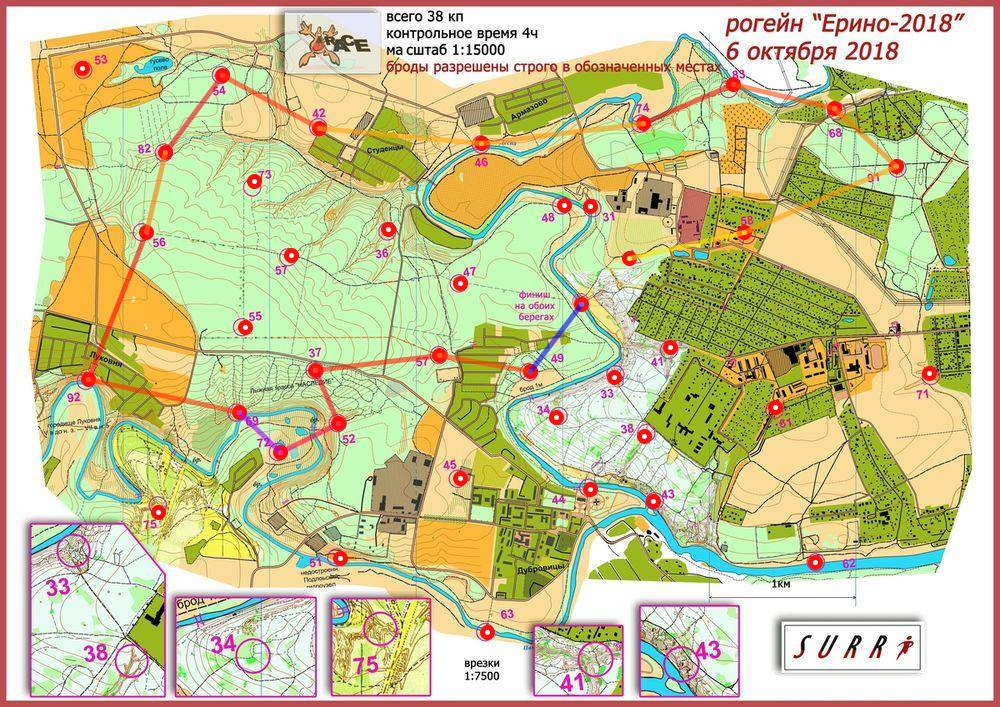

Рогейн Ерино 6.10.18
| Участники | Иванов Владимир
|
| Группа | М4Б |
| Место | 19 |
| Очки | 100 |
| Штраф | 0 |
| Время | 03:54:52 |
| Результат | 100 |
| КП | Время | Сплит | Расстояние, км | Темп, мин/км |
|---|
| С | 12:00:00 | | | |
| 58 | 12:07:51 | 00:07:51 | 0.806 | 9.7 |
| 91 | 12:21:26 | 00:13:35 | 1.128 | 12.0 |
| 68 | 12:29:07 | 00:07:41 | 0.572 | 13.4 |
| 83 | 12:39:47 | 00:10:40 | 0.715 | 14.9 |
| 74 | 12:51:17 | 00:11:30 | 0.669 | 17.2 |
| 46 | 13:05:10 | 00:13:53 | 1.111 | 12.5 |
| 42 | 13:18:16 | 00:13:06 | 1.115 | 11.8 |
| 54 | 13:30:15 | 00:11:59 | 0.753 | 15.9 |
| 82 | 13:44:09 | 00:13:54 | 0.652 | 21.3 |
| 56 | 13:51:39 | 00:07:30 | 0.558 | 13.5 |
| 92 | 14:10:53 | 00:19:14 | 1.076 | 17.9 |
| 69 | 14:27:46 | 00:16:53 | 1.056 | 16.0 |
| 72 | 14:39:03 | 00:11:17 | 0.388 | 29.1 |
| 52 | 14:50:19 | 00:11:16 | 0.444 | 25.4 |
| 37 | 14:58:29 | 00:08:10 | 0.397 | 20.6 |
| 59 | 15:12:35 | 00:14:06 | 0.855 | 16.5 |
| 49 | 15:22:13 | 00:09:38 | 0.626 | 15.4 |
| Ф | 15:54:52 | 00:32:39 | 0.582 | 56.1 |
| | | 03:54:52 | 13.503 км | 17.4 мин/км |
|---|
